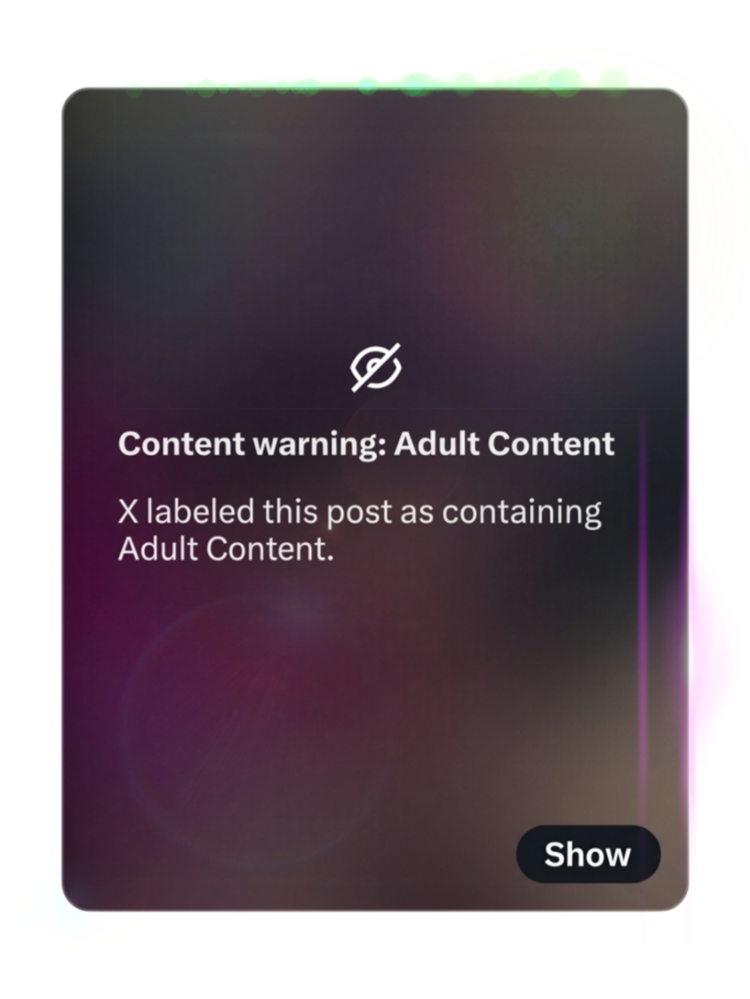

Make sure your downloads are always available and fast.
You’ll never hit a bandwidth or download limit with ad-supported downloads, no matter how popular the VIDEO is ✓

Download
DownloadMake sure your downloads are always available and fast.
You’ll never hit a bandwidth or download limit with ad-supported downloads, no matter how popular the VIDEO is ✓